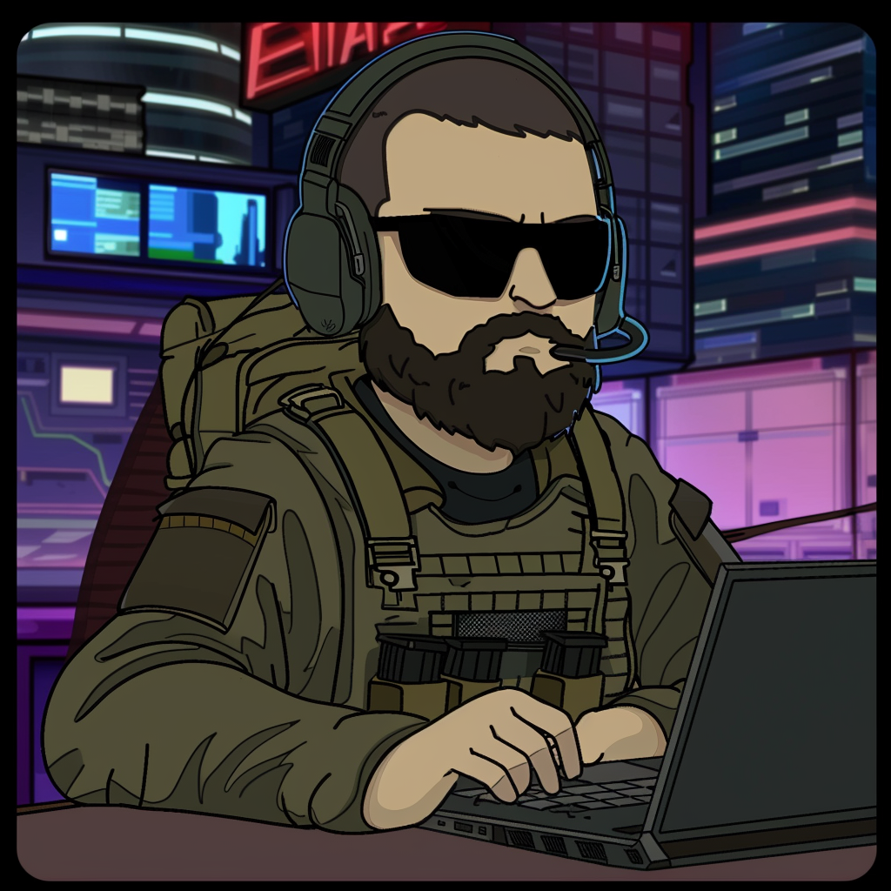

Who Am I
- +16 years of OSINT operational and teaching experience.
- Passionate about CYBER | OSINT | SOCMINT | IMINT | GEOINT | DARK WEB | FACIAL RECOGNITION | CRYPTO | PYTHON | OPSEC.
- Founder of Tactical OSINT Academy
- Founding Member of OSINT.UK
- Creator of various OSINT Tools written in Python.
- Regular contributor to the international #OSINT community, bringing to light new OSINT techniques and discovering various weaknesses in existing systems.
- Frequently assists law enforcement agencies in tracking down criminals and locating missing persons.
- The OSINTion Black Badge holder.
- Trace Labs Winner (x2), Trace Labs volunteer judge and report writer.
- Hacktoria CTF Engineer.
- Member of the Hacktoria CTF Team and Community.
- OSINT-FR Hall of Fame Inductee.